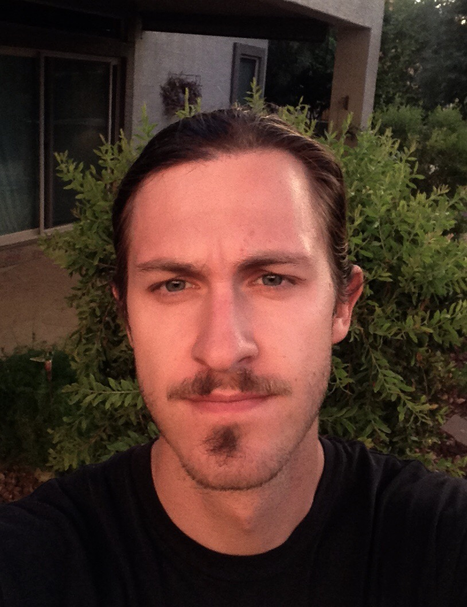

 My name is Alec Robinson. I never know how to start my personal bio descriptions becuase my interests and activities are diverse and numerous. I'm a jack of many trades. I've worked in a variety of fields from guiding, to photography, to education, to bike mechanic and neighborhood car mechanic.
My greatest passion is ecology, conservation, and the outdoors. For me, natural environments are a way to feel whole and recoonect with something deeper than myself.